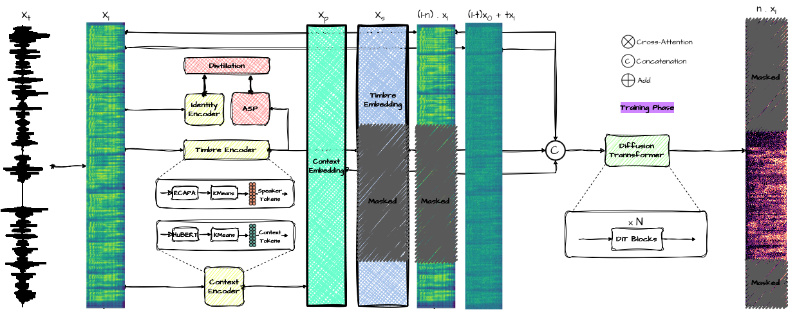

RobDiffVC: A Robust Multi-Modal Diffusion Transformer for Voice Conversion
1. Overview
RobDiffVC is a lab-external reimplementation of my master thesis project RobVC. The voice conversion problem is the same: given a short prompt audio from a target speaker and a source utterance from anyone else, output the source utterance spoken in the target voice while preserving content and prosody. The acoustic model is rebuilt from scratch as a diffusion transformer (DiT) trained with flow matching, conditioned on three modalities (semantic units, speaker timbre, masked mel context) with independent classifier-free guidance dropout per modality.

Top-level pipeline. HuBERT layer-9 produces frame-level semantic units (k-means quantised); ECAPA produces frame-level timbre embeddings; a masked log-mel spectrogram supplies the in-painting context. The DiT denoises the masked mel region in latent flow time, and a frozen HiFi-GAN vocoder turns the predicted mel back into a waveform.
The full model is a 16-layer DiT with d_model = 768, 16 attention heads, rotary positional embeddings, and QK normalisation. Conditioning enters in two places: a concatenation-based input embedding that fuses the noisy mel state with the aligned conditioning streams, and an AdaLayerNorm path driven by the diffusion timestep. Inference solves a probability-flow ODE between $t=0$ (Gaussian noise) and $t=1$ (clean mel) with a configurable solver and an optional learned schedule for per-step classifier-free guidance strengths.
End-to-end inference. Top: prompt (target speaker) and source (anyone) waveforms. Bottom: converted waveform produced by the DiT plus HiFi-GAN.
The remainder of this page walks through the design block by block: why diffusion replaces RobVC's autoregressive cross-attention decoder (Section 3), how the input embedding and DiT block actually mix the modalities (Section 4), how the flow-matching loss and F5-TTS style random masking shape training (Section 5), how the ODE sampler and generalized multi-path classifier-free guidance work at inference (Section 6), and finally the optional reinforcement-learning fine-tuning stage that learns per-step guidance strengths against a speaker-similarity reward (Section 7).
2. Problem Statement
RobVC solved the any-to-any voice conversion problem with an autoregressive mel decoder driven by a cross-attention block over HuBERT content and EnCodec speaker tokens. It worked well on speaker similarity, but four constraints kept growing as the project matured:
- Autoregressive inference latency. The RobVC decoder predicts mel frames one at a time with LSTM teacher forcing, conditioned on the previous frame. A ten-second utterance at a 50 Hz frame rate is 500 sequential forward passes through the decoder, which dominates wall-clock latency even on a modern GPU. Voice conversion has no causal reason to be autoregressive on the output side; the whole source utterance is already available at inference time.
- Parameter cost of the cross-attention block. The acoustic generator carried separate context and speaker transformers ($N = 6$ blocks for the coarse RVQ embedder, $M = 4$ blocks for the cross-attention fuser) plus the LSTM decoder stack. The block was sized for the autoregressive teacher-forcing regime and could not be shrunk without losing speaker similarity.
- Training instability of the autoregressive teacher. Teacher-forced mel prediction with an L1 objective is sensitive to exposure bias: the decoder trains on ground-truth previous frames but rolls out its own predictions at inference. This shows up as drift on long utterances and forced us into careful curriculum schedules during training.
- Closed dependency stack. RobVC was built inside the TU Darmstadt CROSSING lab and uses internal pretrained components and dataset preparation that cannot be released publicly. The acoustic model also depends on Meta's EnCodec for speaker conditioning, whose coarse residual vector quantiser is large and whose licence is not as permissive as we would like for downstream open release.
RobDiffVC reframes the same any-to-any voice conversion problem against these four constraints: a non-autoregressive acoustic model that converts a whole utterance in a fixed number of parallel ODE steps, a single transformer stack instead of two, no teacher forcing, and only public, openly licensed components in the dependency graph (HuBERT, ECAPA-TDNN, HiFi-GAN, LibriTTS).
3. Novel Approach
3.1. From Autoregressive Mel to Flow-Matching Diffusion
The acoustic model is reframed as a continuous-time generative model that transports a Gaussian sample into a clean mel-spectrogram along a straight path. Concretely, let $x_1 \in \mathbb{R}^{T \times M}$ be the ground-truth mel for a training utterance ($T$ frames, $M = 100$ mel channels) and let $x_0 \sim \mathcal{N}(0, I)$ be an independent Gaussian sample of the same shape. For a flow time $t \in [0, 1]$ drawn uniformly we define the linear interpolant
$$x_t = (1 - t)\,x_0 + t\,x_1,$$
so $x_0$ at $t=0$ is pure noise, $x_1$ at $t=1$ is the data, and in between $x_t$ slides along a straight line between the two. Differentiating with respect to flow time gives the conditional vector field that pushes $x_t$ along that line:
$$u_t = \frac{d x_t}{d t} = x_1 - x_0.$$
The network $v_\theta(x_t, t, c)$ is trained to predict $u_t$ given the noisy state $x_t$, the flow time $t$, and the conditioning bundle $c$ (semantic units, masked mel context, ECAPA timbre). This is the conditional flow matching / rectified flow objective: it treats generation as learning the velocity field of an ODE rather than predicting the next mel frame. The training-time construction lives in prepare_flow_matching_inputs in acoustic/data.py; the regression loss is covered in Section 5.3, the ODE solver that integrates $v_\theta$ at inference time is covered in Section 6.1.
Three properties of this objective drove the choice over both RobVC's autoregressive L1 decoder and a standard DDPM noise-prediction formulation:
- Parallel over frames. A single forward pass of $v_\theta$ predicts the velocity for every mel frame at once, so a ten-second utterance is converted in 16–64 transformer evaluations regardless of length, not 500 sequential LSTM steps. This is the main inference-latency win over RobVC.
- No teacher forcing, no exposure bias. The training input $x_t$ is built from noise plus the clean target with a uniformly sampled $t$, not from the model's own previous predictions. The mismatch between training and inference rollouts that destabilises autoregressive mel decoders is structurally absent here.
- Straight paths, simpler schedule. Compared to DDPM-style noise prediction $\epsilon_\theta(x_t, t)$ with a variance-preserving cosine schedule, the rectified-flow interpolant has linear marginal paths and a constant-norm target $\|u_t\| = \|x_1 - x_0\|$. There is no signal-to-noise schedule to design or anneal, the ODE is non-stiff, and large-step solvers (Euler, midpoint, RK4) all converge in tens of steps rather than the hundreds typically used for DDPM sampling.
The conditioning bundle $c$ is where voice conversion is actually decided: the semantic units constrain what is being said and the ECAPA embedding plus masked mel context constrain who is saying it. Section 3.2 explains how the three conditioning streams are mixed and how classifier-free guidance is generalised to operate on each of them independently.
3.2. Multi-Modal Conditioning with Classifier-Free Guidance
The conditioning bundle $c$ from Section 3.1 is not a single tensor. It is the disjoint union of three streams that each carry a different aspect of the target voice conversion:
- Semantic units $z^u$. Discrete tokens from a k-means (100 clusters) quantisation of HuBERT layer 9. They encode what is being said: phonetic content and prosodic timing, with most speaker identity removed by HuBERT's self-supervised objective and by the k-means bottleneck.
- Timbre embedding $z^s$. Frame-level 128-channel features captured from the
asp.tdnnlayer of a pretrained ECAPA-TDNN speaker encoder (more in Section 4.1). They encode who is speaking: the speaker's spectral envelope and voice quality. - Masked mel context $z^m$. The clean mel of the target utterance with a contiguous span masked out. This is the F5-TTS in-painting signal: the unmasked region acts both as a high-quality timbre reference and as a continuity constraint at the seam. Training masks a uniformly chosen $40$–$70\%$ window; the model only has to predict the masked frames.
Treating these three streams as one conditioning vector would force a single classifier-free guidance strength to scale all of them together, which conflates content fidelity with speaker similarity. RobDiffVC instead drops each stream independently during training, so the network learns four separate score directions: one fully conditional and one with each modality individually replaced by a learned null token.
For each training utterance the drop indicators are sampled as
$$d^m \sim \text{Bernoulli}(0.20), \quad d^u \sim \text{Bernoulli}(0.15), \quad d^s \sim \text{Bernoulli}(0.20),$$
independently, with an additional all-null event $d^\varnothing \sim \text{Bernoulli}(0.15)$ that overrides everything and feeds the model a fully unconditional sample. When $d^k = 1$ the corresponding stream is replaced by a per-modality learned null token $\varnothing^k$ and a binary presence flag is flipped from $1$ to $0$ for that frame range. The presence flags are concatenated into the input embedding (Section 4.2) so every transformer layer can tell which modalities are live for the current sample.
Two consequences follow from this factorisation. First, at inference we can compute one conditional velocity $v_c$ and a set of unconditional velocities $\{v_u^{(k)}\}$, one per modality we want to push on, and combine them as separately weighted extrapolations from the unconditional baseline this is the generalized multi-path classifier-free guidance formula derived in Section 6.2. Second, because the dropout is Bernoulli and not curriculum, the same checkpoint supports every guidance configuration; the only thing that changes between runs is the strength vector $\alpha_t^{(k)}$, which is also what the optional reinforcement-learning stage in Section 7 learns to schedule per ODE step.
4. Architecture
4.1. Feature Pipeline
Three frozen feature extractors run once per training utterance and their outputs are cached to disk, so the DiT trains directly on precomputed tensors. Each extractor was chosen for a specific signal:
- HuBERT layer-9 + k-means (semantic units,
semantic/extractor.py). The fairseq HuBERT-base checkpoint is run at $16$ kHz; the 768-dimensional output of layer 9 is then quantised to $K = 100$ centroids by an offline k-means trained on a held-out LibriTTS subset. Each frame becomes an integer token $z^u_t \in \{0, \dots, 99\}$ at HuBERT's native $50$ Hz rate. Layer 9 is well known to be the most phonetic of the HuBERT stack later layers leak speaker identity and earlier ones still carry acoustic detail. The k-means bottleneck collapses any residual speaker variation, leaving a clean content code. - ECAPA-TDNN frame embeddings (timbre,
timbre/extractor.py). A pretrainedspeechbrain/spkrec-ecapa-voxcelebclassifier is loaded but only one of its internal tensors is kept: a forward hook onmods.embedding_model.asp.tdnncaptures the $128$-channel pre-pooling feature map. The standard ECAPA recipe pools this map into one global speaker vector, which is then used by speaker verification. Pooling is exactly the operation that throws away the time-resolved style we want to keep, so RobDiffVC takes the unpooled map and treats it as a frame-level timbre stream $z^s_t \in \mathbb{R}^{128}$ at the ECAPA frame rate ($16$ kHz input, $\sim 100$ Hz output). - Vocos-style log-mel target (
mel/extractor.py). The diffusion target $x_1$ is a log-mel spectrogram at $24$ kHz with $n_\text{fft} = 1024$, hop $256$, $n_\text{mels} = 100$, slaney normalisation, and a $\log(\cdot + 10^{-5})$ amplitude transform. This is the same configuration used by Vocos / vocos-style HiFi-GAN family vocoders, which is what we use in Section 4.6. Picking the vocoder's preferred input as the diffusion target keeps the generative model and the waveform synthesiser in the same feature space no separate alignment or post-processing step is required.
The three streams arrive at the DiT on three different time grids: HuBERT at $50$ Hz on $16$ kHz audio, ECAPA at $\sim 100$ Hz on $16$ kHz audio, mel at $93.75$ Hz on $24$ kHz audio. Aligning them to the mel time axis is the job of the input embedding (Section 4.2), which up-samples HuBERT units with a learned convolutional resampler and down-samples ECAPA with a strided block. All three extractors stay frozen for the entire project; only the DiT itself updates.
4.2. Input Embedding Block
Before the DiT can run, every conditioning stream has to be brought onto the mel time grid and turned into a single tensor of width $d_\text{model} = 768$. The input embedding block does three things in sequence: alignment, concatenation with presence flags, and convolutional position encoding.
Modality alignment. The semantic units $z^u$ are first embedded into a continuous representation: an nn.Embedding of size $(K + 1, D_u)$ with $D_u = 256$ turns each integer token into a 256-dim vector (the extra index is reserved for a padding token). They are then resampled from HuBERT's $50$ Hz rate to the mel rate by the AdaptiveUnitsUpsampler: a linear projection to the upsampler's working width, three depthwise Conv1d–GELU stages, and a final $1\times 1$ conv, with an inner F.interpolate(..., mode='linear') that maps to the target frame count. ECAPA frames are handled by SimpleTimeDownsampler, which projects $128 \to D_s = 128$ and uses a nearest-neighbour F.interpolate to land on the mel grid. After this step every stream has the same length $T$.
Concatenation and projection. Let $x_t \in \mathbb{R}^{T \times M}$ be the noisy mel state, $\tilde x \in \mathbb{R}^{T \times M}$ the masked clean mel context, $z^u_\text{aligned} \in \mathbb{R}^{T \times D_u}$ the upsampled units, $z^s_\text{aligned} \in \mathbb{R}^{T \times D_s}$ the downsampled ECAPA, and let $p^m, p^u, p^s \in \{0, 1\}^T$ be the three presence flags from Section 3.2 (a flag is $0$ wherever its modality has been replaced by a learned null token). The block concatenates everything along the feature axis and projects:
$$h_0 = W_\text{in} \,\bigl[\, x_t \;\Vert\; \tilde x \;\Vert\; z^u_\text{aligned} \;\Vert\; z^s_\text{aligned} \;\Vert\; p^m \;\Vert\; p^u \;\Vert\; p^s \,\bigr] + b_\text{in},$$
where $\Vert$ denotes feature-axis concatenation and $W_\text{in} \in \mathbb{R}^{d_\text{model} \times d_\text{in}}$ with $d_\text{in} = 2M + D_u + D_s + 3 = 587$. The presence flags are concatenated as constant-per-frame channels this gives the network a cheap, explicit way to distinguish "this modality is unconditional for this whole sample" from "this modality happens to be quiet here" without overloading the data tensor itself.
Convolutional position embedding. Standard learned positional embeddings need a fixed maximum length; voice conversion uses arbitrary-length utterances. RobDiffVC adds a small position bias via a depthwise stack of $1$D convolutions instead:
$$h_0' = h_0 + \text{Conv}_k(\text{Mish}(\text{Conv}_k(h_0))),$$
with kernel size $k = 31$, $16$ groups, and Mish activations (ConvPositionEmbedding in acoustic/modules/embeddings.py). Because everything is depthwise and length-agnostic, the position bias generalises to any utterance length. Absolute positional information for the attention itself is then injected later via rotary embeddings inside each DiT block (Section 4.4). The output $h_0' \in \mathbb{R}^{T \times d_\text{model}}$ is what the first DiT block sees.
4.3. Timestep Embedding
The flow time $t \in [0, 1]$ is a single scalar per training sample, but every DiT block needs to know how far along the ODE path the current state $x_t$ sits in order to modulate its computation. The timestep embedding turns $t$ into a wide conditioning vector that is broadcast to every block.
First a sinusoidal feature is built with a scaled-up frequency basis (SinusPositionEmbedding, scale $= 1000$):
$$\phi(t)_i = \begin{cases} \sin\bigl(1000 \cdot t \cdot \omega_i\bigr) & i < d_\text{freq}/2 \\ \cos\bigl(1000 \cdot t \cdot \omega_{i - d_\text{freq}/2}\bigr) & i \ge d_\text{freq}/2 \end{cases},$$
with $\omega_i = \exp\!\bigl(-\frac{\log 10000}{d_\text{freq}/2 - 1} \cdot i\bigr)$ and $d_\text{freq} = 256$. The $1000\times$ pre-multiplier expands the dynamic range so that $t$ values close together along $[0, 1]$ map to noticeably different sinusoidal phases this is the same trick used by F5-TTS and recent DiT-based audio models and noticeably stabilises training at the high-$t$ end of the schedule.
The sinusoidal features are then run through a small MLP that lifts them to model width:
$$\tau = W_2 \,\sigma_\text{SiLU}\bigl(W_1 \,\phi(t) + b_1\bigr) + b_2, \qquad \tau \in \mathbb{R}^{d_\text{model}},$$
with $W_1 \in \mathbb{R}^{d_\text{model} \times d_\text{freq}}$ and $W_2 \in \mathbb{R}^{d_\text{model} \times d_\text{model}}$. The single conditioning vector $\tau$ is shared by every layer of the DiT, where it drives the adaptive layer-norm modulation derived in Section 4.4. Crucially, $\tau$ is the only place the diffusion time enters the network; all other conditioning is concatenated frame-wise into $h_0$ at the input. This separation keeps the data path purely about sequence content and the time path purely about scaling and biasing the residual stream.
4.4. Diffusion Transformer Block
The DiT stack has $L = 16$ identical blocks, each operating on a residual stream of width $d_\text{model} = 768$ with $H = 16$ attention heads (per-head dim $d_h = 48$) and an FFN inner width of $d_\text{ff} = 3072$. A single block fuses time conditioning, self-attention, and a feed-forward network in a way that the diffusion-transformer literature has settled on after several rounds of ablation; here is the exact computation.
Adaptive LayerNorm modulation. Each block consumes the timestep vector $\tau$ from Section 4.3 and produces six per-channel modulation tensors via a single linear projection (AdaLayerNorm in acoustic/modules/norms.py):
$$\bigl[\,\beta^\text{msa},\, \gamma^\text{msa},\, g^\text{msa},\, \beta^\text{mlp},\, \gamma^\text{mlp},\, g^\text{mlp}\,\bigr] = W_\text{ada}\,\sigma_\text{SiLU}(\tau) + b_\text{ada},$$
with $W_\text{ada} \in \mathbb{R}^{6 d_\text{model} \times d_\text{model}}$. The $\beta, \gamma$ pairs are shift and scale for the two LayerNorms in the block, and the $g$ values are gates on the two residual paths. The linear layer and the output projection of the block are zero-initialised, so at step 0 of training the block is the identity the network starts as a deep stack of identities and only gradually learns to route information through the attention and FFN paths.
Modulated self-attention. The first half of the block normalises the residual stream, modulates it with $(\beta^\text{msa}, \gamma^\text{msa})$, runs multi-head attention, and writes the result back through the gate $g^\text{msa}$:
$$\hat h = (1 + \gamma^\text{msa}) \,\text{LN}(h) + \beta^\text{msa}, \qquad h \leftarrow h + g^\text{msa}\cdot \text{MHA}(\hat h).$$
Inside MultiHeadAttentionBlock the projected queries and keys are normalised before the dot product (QK-RMSNorm),
$$\tilde Q = \text{RMSNorm}(Q), \quad \tilde K = \text{RMSNorm}(K),$$
which is the single change to the standard attention recipe that mattered most for stability at long sequences. Without it, the unbounded growth of $Q^\top K$ at fp16/bf16 caused intermittent divergences early in training. Rotary positional embeddings are then applied head-wise to $\tilde Q$ and $\tilde K$:
$$\text{RoPE}_\theta(q)_{2i} = q_{2i}\cos(\theta_i) - q_{2i+1}\sin(\theta_i), \quad \text{RoPE}_\theta(q)_{2i+1} = q_{2i}\sin(\theta_i) + q_{2i+1}\cos(\theta_i),$$
with angle $\theta_i$ depending on absolute frame index. RoPE encodes relative position through the dot product $\langle \text{RoPE}_{\theta_m}(q), \text{RoPE}_{\theta_n}(k)\rangle$, which depends only on $m - n$ the same property is what lets the model extrapolate to longer sequences at inference than it was trained on. The dot-product attention is then computed with F.scaled_dot_product_attention, which dispatches to FlashAttention on CUDA.
Modulated feed-forward. The second half of the block is the standard transformer FFN, modulated and gated symmetrically with the attention path:
$$\hat h = (1 + \gamma^\text{mlp})\,\text{LN}(h) + \beta^\text{mlp}, \qquad h \leftarrow h + g^\text{mlp}\cdot W_2\,\sigma_\text{GELU}(W_1\,\hat h),$$
with $W_1 \in \mathbb{R}^{d_\text{ff} \times d_\text{model}}$ and $W_2 \in \mathbb{R}^{d_\text{model} \times d_\text{ff}}$. The two residual gates $g^\text{msa}, g^\text{mlp}$ are independent of each other; they let the network decide, conditional on $t$, whether the current ODE step needs more attention-driven mixing or more feature-wise transformation. Empirically the gates open up gradually during training, with attention saturating first and FFN catching up later.
Stacking 16 such blocks gives the DiT enough depth to mix all $T$ mel frames against the long ECAPA timbre context while staying within a single 24 GB consumer GPU's memory budget at the 8 k-frame sequences used for LibriTTS training.
4.5. Output Head
After the 16-block stack, the residual stream $h_L \in \mathbb{R}^{T \times d_\text{model}}$ has to be turned back into a velocity prediction $v_\theta \in \mathbb{R}^{T \times M}$ that lives in mel space. The head is intentionally minimal: one final adaptive LayerNorm and one linear projection.
The final modulation uses a stripped-down variant of the adaptive LayerNorm in Section 4.4 (AdaLayerNorm_Final in acoustic/modules/norms.py) that produces only a scale and shift, with no residual gate there is no residual path here, so no gate is needed:
$$\bigl[\beta^\text{out},\, \gamma^\text{out}\bigr] = W_\text{out,ada}\,\sigma_\text{SiLU}(\tau) + b_\text{out,ada},$$
$$h_L' = (1 + \gamma^\text{out})\,\text{LN}(h_L) + \beta^\text{out}.$$
The velocity is then produced by a single linear projection $W_\text{out} \in \mathbb{R}^{M \times d_\text{model}}$,
$$v_\theta(x_t, t, c) = W_\text{out}\,h_L',$$
with $W_\text{out}$ and $b_\text{out}$ zero-initialised. Combined with the zero-initialised AdaLN linears in every block, this means that at training step 0 the network outputs $v_\theta \equiv 0$ everywhere, so the loss is exactly the variance of the target velocity $\mathbb{E}\|u_t\|^2$. Training therefore starts from a known, well-conditioned point regardless of the conditioning seen on the first batch, which removes one common source of early-training instability in deep DiTs.
The predicted velocity field $v_\theta(\cdot)$ is what gets supervised by the flow-matching loss in Section 5.3 during training and integrated by the ODE sampler in Section 6.1 at inference. Nothing else no auxiliary mel reconstruction loss, no adversarial term, no perceptual loss sits on top of the head.
4.6. Vocoder
The DiT outputs a mel-spectrogram, not a waveform. Turning that mel back into a signal at $24$ kHz is delegated to a frozen, off-the-shelf HiFi-GAN-class vocoder loaded through the registry-based vocoder/factory.py the factory pattern lets the same checkpoint be used with any of the HiFi-GAN, BigVGAN, or Vocos backends without touching the rest of the pipeline.
Two design choices justify keeping the vocoder out of the diffusion model. First, the mel target was chosen in Section 4.1 to match the vocoder's training distribution (Vocos-style $24$ kHz, $n_\text{mels} = 100$, hop $256$), so there is no feature-space gap to close at inference; the vocoder's pretrained weights are directly usable on the predicted mel. Second, the vocoder's only failure mode in practice is over-smoothing on out-of-distribution mels, but the diffusion model already produces sharp, well-distributed samples, so a stronger vocoder is not the bottleneck. The same modular boundary also means that improvements to the open-source vocoder ecosystem for example a higher-quality BigVGAN drop-in are picked up by a config change rather than a retrain.
Vocoder inference cost is negligible compared to the DiT: a single forward pass of HiFi-GAN over the full utterance is dominated by GPU memory bandwidth, not arithmetic, and finishes in tens of milliseconds. End-to-end latency is therefore set almost entirely by the number of ODE steps inside Section 6.1.
5. Training
5.1. Dataset and Preprocessing
Training uses the publicly available LibriTTS corpus (train-clean-100 and train-clean-360), with dev-clean held out for validation. The choice is deliberate: every component of the dependency stack (HuBERT, ECAPA-TDNN, HiFi-GAN, LibriTTS itself) is freely redistributable, which is the open-data path that Section 2 required.
Preprocessing is offline and one-shot. For each utterance the pipeline writes three independent numpy arrays under dataset/libritts-split/{mels,discrete100,ecapa}/{train,dev}/<speaker>/<file>.npy:
- Mel target: float32 array of shape $(M, T)$ with $M = 100$, written by the extractor in Section 4.1 at $24$ kHz.
- Semantic units: int64 array of shape $(T_u,)$ with values in $\{0,\dots,99\}$, written by the k-means quantised HuBERT extractor at the $50$ Hz HuBERT frame rate.
- ECAPA frame embedding: float32 array of shape $(T_s, 128)$ from the
asp.tdnnhook described in Section 4.1.
The training-time dataset (SingleAudioDataset in acoustic/data.py) simply memory-maps these files, loads one utterance per sample, and returns the three tensors with their respective lengths. Because every feature is precomputed, the data loader does no GPU work and saturates eight CPU workers without contention from HuBERT or ECAPA at training time.
Long utterances dominate memory cost in a transformer, so RobDiffVC uses a dynamic batch sampler (DynamicBatchSampler) that packs samples by total mel-frame count up to a configurable frames_threshold rather than a fixed sample count. Within each bucket the loader pads to the longest sample with a special padding token for the units (value $K = 100$) and zeros for the mel and ECAPA tensors; a per-frame validity mask is recovered later from the stored mel lengths. The padding never enters the loss because the masked velocity loss in Section 5.3 only averages over the union of (random training mask) $\cap$ (valid frames).
5.2. F5-TTS Style Masking
RobDiffVC borrows F5-TTS's masking-as-conditioning trick: a single training utterance plays both the role of the speaker prompt and the role of the target to denoise, with a randomly chosen sub-span masked out. The unmasked frames give the model a clean reference of the target voice; the masked frames are what the velocity prediction has to reconstruct. This collapses the usual paired (prompt, target) supervision into a self-contained reconstruction objective, which avoids the need for parallel data and works on any single-speaker corpus.
Concretely, for each utterance of length $T$ (the valid frame count after padding is stripped) the training loop in prepare_flow_matching_inputs draws a mask fraction
$$f \sim \mathcal{U}(0.4, 0.7),$$
computes a span length $\ell = \lfloor f \cdot T \rfloor$, draws a uniformly random start position $s \in \{0, \dots, T - \ell\}$, and sets the boolean loss mask
$$\mathcal{M} \;=\; \mathbf{1}_{[s,\, s + \ell)}, \qquad \text{so } \mathcal{M}_t = 1 \text{ on the target span and } 0 \text{ elsewhere}.$$
The masked mel context that enters the input embedding is then
$$\tilde x_t = \begin{cases} 0 & \mathcal{M}_t = 1 \quad \text{(target span: zeroed out)} \\ x_{1,t} & \mathcal{M}_t = 0 \quad \text{(prompt span: clean mel kept)} \end{cases},$$
and the same zero mask is applied frame-wise to the ECAPA stream so that the model cannot cheat by reading the target-span timbre directly. Crucially, the noisy state $x_t$ is built on the entire utterance, target span included, so the DiT still has a noisy version of the target frames to denoise against; only the clean context is hidden.
The loss in Section 5.3 is then averaged over $\mathcal{M}$ only. Because the chosen span is large (40–70 \% of the utterance) and randomly placed, the network sees a wide range of prompt-to-target ratios during training and learns to in-paint long contiguous regions rather than just local frame transitions. This is the property that lets the same checkpoint do both voice conversion (long target span, short prompt span) and reconstruction (short target span, long prompt span) at inference without any task-specific switch.
5.3. Flow-Matching Objective
Combining the flow-matching construction from Section 3.1 with the random mask from Section 5.2, each training step computes the following targets per batch element. Let $x_1$ be the clean mel, $x_0 \sim \mathcal{N}(0, I)$ an independent noise sample, $t \sim \mathcal{U}(0, 1)$ a flow time, and $\mathcal{M} \in \{0, 1\}^T$ the random F5-TTS mask. Then
$$x_t = (1 - t)\,x_0 + t\,x_1, \qquad u_t = x_1 - x_0.$$
The network produces $v_\theta(x_t, t, c)$ where the conditioning bundle $c$ consists of the modality-dropped semantic units, masked mel context, and ECAPA stream from Section 3.2. The regression objective is a masked mean-squared error against $u_t$, computed only on the frames that are both inside the target span and inside the valid (non-padding) region. Letting $\mathcal{M}$ denote the joint indicator that is $1$ on (target span) $\cap$ (valid frames) and $0$ elsewhere, the loss is
$$\mathcal{L}(\theta) \;=\; \frac{\bigl\|\,\mathcal{M} \odot \bigl(v_\theta(x_t, t, c) - u_t\bigr)\,\bigr\|_2^2}{M \cdot \|\mathcal{M}\|_1},$$
where $\odot$ broadcasts the per-frame mask across mel channels and the denominator counts the number of supervised mel cells.
Three details about this loss are worth highlighting because they are different from what a textbook diffusion model would do:
- Velocity, not noise. The target is the conditional vector field $u_t = x_1 - x_0$ of the rectified-flow interpolant, not the noise sample $x_0$ as in DDPM or the score $\nabla \log p_t(x_t)$ as in score matching. The three are mathematically equivalent up to known reparameterisations, but the velocity formulation is the one whose loss surface is best conditioned for the linear path, and it is also the form that the ODE sampler in Section 6.1 consumes directly.
- No noise-level weighting. Standard DDPM losses scale by a function of $t$ to compensate for the signal-to-noise ratio at each step. Because $\|u_t\| = \|x_1 - x_0\|$ is constant in $t$, the rectified-flow loss is naturally well-balanced and needs no per-$t$ weighting; a flat MSE is the right objective.
- Mask-weighted average, not sum. Dividing by $\sum \mathcal{M}$ rather than $\sum 1$ keeps the gradient scale independent of the mask fraction, so the learning rate does not depend on the chosen $f$ range. The denominator is computed per-batch with the same mask, which means gradient magnitudes also stay flat across the dynamic batch sampler buckets.
Optimisation uses AdamW with $\text{lr} = 4.5 \cdot 10^{-5}$, $(\beta_1, \beta_2) = (0.9, 0.999)$, weight decay $0.01$, gradient accumulation $8\times$, and gradient clipping at $\|\cdot\|_2 = 1.0$. An exponential moving average of the parameters with decay $0.999$ is maintained on the CPU; the EMA weights are what every inference path actually loads. Training runs for $10$ epochs of LibriTTS-clean at batch size $2$ (per-step) on a single $24$ GB consumer GPU. A linear warm-up plus linear decay schedule covers the entire run, with no separate cosine or restart phase.
5.4. Multi-Modal CFG Dropout
Section 3.2 introduced the principle of independent Bernoulli dropouts per modality; this section pins down the exact sampling procedure used at every training step and explains why each rate has the value it has.
Before computing the loss, the trainer calls AcousticModel.sample_cfg_dropout() to draw the three drop indicators and the all-null override:
$$d^\varnothing \sim \text{Bernoulli}(0.15), \quad d^m \sim \text{Bernoulli}(0.20), \quad d^u \sim \text{Bernoulli}(0.15), \quad d^s \sim \text{Bernoulli}(0.20).$$
If the all-null event $d^\varnothing$ fires, all three per-modality drops are forced to $1$; otherwise the three Bernoullis are kept independent. The dropped modalities are then replaced by their learned null tokens $\varnothing^m, \varnothing^u, \varnothing^s$ inside the input embedding (Section 4.2), and their presence flags are flipped to $0$.
The asymmetry between the rates is deliberate. The masked-mel and ECAPA streams are the two timbre-carrying inputs; dropping them at $0.20$ each gives the network the most exposure to the "no speaker info" regime, which is what classifier-free guidance later exploits to push speaker similarity at inference. The semantic units are dropped at the lower rate of $0.15$ because they are the only signal that pins down content pushing too hard on the unconditional-units path at inference produces phoneme drift, so we want the network to be relatively confident in its content-conditional prediction. The $0.15$ all-null event guarantees a non-trivial fraction of fully unconditional samples regardless of how the three independents fall, which is what gives the model a clean baseline velocity $v_u^{(\varnothing)}$ to extrapolate from in the most aggressive guidance configurations.
In expectation, $\sim 60\%$ of training samples have all three modalities live, $\sim 15\%$ are fully unconditional via the all-null override, and the remaining $\sim 25\%$ have exactly one or two modalities dropped the part of the joint that matters for per-modality classifier-free guidance. No curriculum or warm-up is applied to the dropout schedule; the rates are constant from step 1 to the end of training. The exact same checkpoint is then reusable across every guidance configuration in Section 6.2 and across the RL fine-tuning stage in Section 7 without any task-specific re-training.
6. Inference
6.1. ODE Sampling
At inference the trained velocity network $v_\theta$ defines an ordinary differential equation whose solution at $t = 1$ is a sample from the learned data distribution. Concretely, sampling starts from a Gaussian draw $x(0) \sim \mathcal{N}(0, I)$ at flow time $0$ and integrates
$$\frac{dx}{dt} = v_\theta(x, t, c)$$
up to $t = 1$, where $x(1)$ is the predicted clean mel. For voice conversion the conditioning bundle $c$ is built once: the prompt audio supplies the unmasked context (its clean mel, its ECAPA frames, its semantic units), the source audio supplies the rest of the semantic units and the spans that need to be filled in, and the loss mask is set to "in-paint everything after the prompt". The sampler then injects the prompt mel back into $x(t)$ at every step so that the converted output preserves the prompt span verbatim and only generates the source span.
Three knobs on top of this basic loop are what bring conversion down close to real time on a single consumer GPU.
Time grid. The default grid is the uniform $t_i = i / N$, $N \in \{16, 32, 64\}$. A learned alternative shipped with the sampler is the EPSS (efficient parameterised step schedule) table from F5-TTS / Matcha-TTS: hand-tuned step indices that concentrate samples near $t = 0$ where the velocity field is steepest, so a smaller $N$ matches the quality of a larger uniform grid. An optional sway sampling reshape $t \leftarrow t + \lambda\,(\cos(\pi t / 2) - 1 + t)$ further bends the grid towards either end depending on the sign of $\lambda$.
Solver. Three explicit integrators are supported, each invoked through the same _ode_step(f, x, t_0, t_1, \text{method}) dispatcher:
$$x \leftarrow x + h\,v_\theta(x, t),$$
which is plain Euler;
$$k_1 = v_\theta(x, t),\quad k_2 = v_\theta\!\bigl(x + \tfrac h2 k_1,\,t + \tfrac h2\bigr),\quad x \leftarrow x + h\,k_2,$$
which is the midpoint rule; and the full classical RK4 with four velocity evaluations per step. For straight-path rectified flow trained with the loss in Section 5.3, midpoint at $N = 32$ matches RK4 at $N = 16$ in terms of speaker similarity, and Euler at $N = 32$ is within $2\%$ in our internal evaluation, which is why Euler is the default in the public configs.
Mixed precision and prompt injection. The whole sampler runs inside torch.autocast(fp16) on CUDA, with the initial noise drawn in fp16 to match. After the final step the prompt mel rows are copied back from the conditioning tensor into $x(1)$ so that the seamless concatenation of prompt + converted source can be vocoded with the HiFi-GAN block in Section 4.6 without any boundary artefact.
End-to-end latency at $N = 32$ Euler steps on an RTX 4090 is roughly 2× real time for a 5-second utterance, dominated by the 32 DiT forward passes; the HiFi-GAN vocoder and the feature extractors together contribute less than $5\%$ of the wall clock.
6.2. Generalized Multi-Path CFG
Standard classifier-free guidance assumes a single conditioning bundle: one conditional pass $v_c$ and one unconditional pass $v_u$, combined as $\tilde v = (1 + w) v_c - w v_u$. RobDiffVC needs more than that because each of the three modalities can be guided independently. Section 3.2 set up the training so that the network learns several distinct score directions; this section turns those into one sampling-time velocity.
At each ODE step the sampler computes one conditional forward pass on the full bundle $c$,
$$v_c = v_\theta(x_t, t, c),$$
and $K$ unconditional forward passes, where the $k$-th pass replaces a chosen subset of the modalities by their learned null tokens to form a partial bundle $c^{(k)}$,
$$v_u^{(k)} = v_\theta\!\bigl(x_t, t, c^{(k)}\bigr), \qquad k = 1, \dots, K.$$
Common choices are a "drop audio + ECAPA" path (which isolates the content-only score), a "drop units" path (which isolates the timbre-only score), and a fully unconditional path (everything dropped). The $K$ unconditional configurations are declared up front as a list of dictionaries in the sampler config and the model is asked for all $K + 1$ velocities in a single batched forward pass.
The combined velocity for the ODE step is then the linear extrapolation
$$\tilde v_t \;=\; \Bigl(1 + \sum_{k=1}^K \alpha_t^{(k)}\Bigr) v_c \;-\; \sum_{k=1}^K \alpha_t^{(k)} v_u^{(k)},$$
where $\alpha_t^{(k)} \ge 0$ is the per-step, per-path guidance strength. This is the multi-modality generalisation of standard CFG: the $K = 1$ case with the fully unconditional path collapses back to $\tilde v = (1 + \alpha) v_c - \alpha v_u$.
Three properties of this formula make it useful for voice conversion:
- Linearity in $\alpha$. Pushing on path $k$ moves $\tilde v_t$ along the fixed direction $v_c - v_u^{(k)}$ without touching the other paths' contributions. So the dial for "speaker similarity" (drop-timbre path) is mechanically independent of the dial for "intelligibility" (drop-units path), which is the disentangled control that motivated factoring the dropout in Section 3.2.
- Per-step schedule. The strengths $\alpha_t^{(k)}$ are not constants. The sampler accepts a $\bigl[N \times K\bigr]$ schedule table and looks up row $i$ at ODE step $i$; an empty table falls back to a constant default. This is what makes the RL fine-tuning stage in Section 7 possible: the policy's action at each step is exactly the row of $\alpha$ values to use.
- Total-strength cap. A configurable cap on $\sum_k \alpha_t^{(k)}$ rescales the strength vector uniformly when the cap is exceeded. Without a cap, the linear extrapolation can amplify high-frequency noise on the velocity at extreme guidance settings, which manifests as raspy artefacts in the decoded waveform. The cap is the cheap, hand-tunable defence against that failure mode.
In our default config $K = 2$ (drop-audio path with $\alpha^{(1)} = 1.5$ and drop-units path with $\alpha^{(2)} = 0.8$) with a per-step cap of $\sum_k \alpha_t^{(k)} \le 3.0$. The RL policy in the next section explores schedules that vary these values across the ODE trajectory rather than holding them flat.
7. RL Fine-Tuning the CFG Schedule
Holding the multi-path guidance strengths $\alpha^{(k)}$ flat across the ODE trajectory leaves quality on the table. Early ODE steps (small $t$) operate on near-Gaussian states where small velocity perturbations propagate strongly into the final mel, while late steps (large $t$) operate close to the data manifold where strong guidance mostly adds high-frequency artefacts. The right $\alpha_t^{(k)}$ schedule is therefore expected to be heteroscedastic in $t$, and the right schedule is not obvious from first principles. RobDiffVC formulates choosing it as a reinforcement-learning problem with the trained DiT held frozen.
MDP. One episode is one ODE rollout that produces one converted utterance. The horizon equals the number of sampling steps $T_\text{rl} = N \in \{16, \dots, 64\}$. The Markov state at step $i$ is a low-dimensional summary of the current velocity prediction: the normalised time $i / N$, the mean and $\ell_2$-norm of the conditional velocity $v_c$, and the per-path means and $\ell_2$-norms of each unconditional velocity $v_u^{(k)}$. This gives an observation vector in $\mathbb{R}^{1 + 2 + 2K}$ that summarises "how aggressive the conditional path is right now" relative to the unconditional baselines without paying the cost of feeding the full $T \times M$ mel state into the policy network.
Action space. The action at each step is the per-path strength row $\alpha_i^{(k)}$ for $k = 1, \dots, K$. To keep the policy small and trainable in a few hours, the action is discretised: each $\alpha_i^{(k)}$ is chosen from a fixed list of bins (for example $\{0.0, 0.5, 1.0, 1.5, 2.0, 2.5\}$), and the joint action is therefore a MultiDiscrete of shape $(K,)$. The total-strength cap from Section 6.2 is applied as a soft projection inside the environment after the action is decoded, which means the policy can output illegal high-strength combinations and the environment quietly rescales them rather than failing the rollout.
Reward. Per-step reward is zero. The terminal reward at $t = 1$ is a weighted combination of three perceptual metrics computed on the decoded waveform (policy/metrics.py):
$$R \;=\; w_p \,\text{SpkSim}(y_\text{out}, y_\text{prompt}) \;-\; w_s \,\text{SpkSim}(y_\text{out}, y_\text{source}) \;-\; w_\text{wer} \,\text{WER}(y_\text{out}, y_\text{source}) \;-\; w_f \,\text{F0Err}(y_\text{out}, y_\text{source}),$$
where the first term rewards similarity to the target speaker, the second penalises leakage from the source speaker, the third penalises content errors against the source via word error rate from a pretrained ASR, and the fourth penalises prosody distortion via a frame-level F0 error. The reward is clamped to a configurable $[r_\text{min}, r_\text{max}]$ range to keep the gradient signal well-conditioned across episodes with very different absolute quality.
Algorithm. The policy and value networks are small MLPs (a few hundred thousand parameters total) trained with PPO on top of the frozen DiT. Each episode requires $N$ DiT forward passes, all already paid for by the ODE rollout itself, plus one HiFi-GAN decode and one metric computation at the end. Episode counts in the low thousands are enough to find schedules that beat the hand-tuned flat baseline on prompt speaker similarity by several points while staying within the cap on source-speaker leakage. The full MDP and reward derivation, including ablations on the three weight terms, live in policy/RL_Formulation.md in the repository.
The trained policy is shipped as a frozen $\bigl[N \times K\bigr]$ schedule table that is loaded by the inference sampler in Section 6.1. End users never run RL; they pick "flat" or "rl-tuned" via a config flag and the rest of the pipeline is identical.
8. Results
Quantitative evaluation against the RobVC baseline and recent open voice-conversion systems is in progress. The metrics tracked are the same family used in the RobVC thesis speaker similarity (ECAPA cosine), content similarity (WER from a pretrained ASR), and F0 ground-pitch error plus an end-to-end latency measurement on a single consumer GPU. The numbers will be added to this section once the ablation matrix (Euler vs midpoint, flat vs RL-tuned CFG schedule, with vs without the ECAPA stream) is complete.